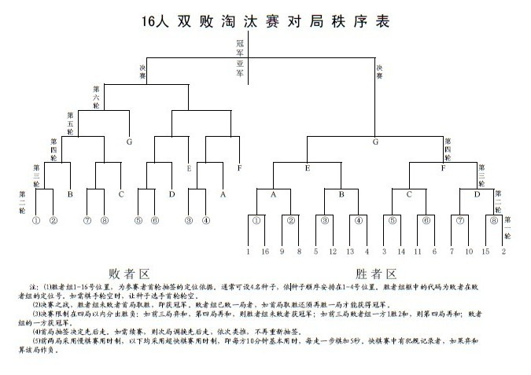

双败淘汰制对局秩序表
#1 双败淘汰制对局秩序表作者：我就不信注册不上 发表时间：2010-1-13 16:11:15
出自pdf格式的《象棋竞赛规则（2007年版试行本）》，表格无法复制，截图过来分享给大家

#2 Re:双败淘汰制对局秩序表作者：如火流年 发表时间：2010-1-13 16:24:23
图片 ：http://zh.wikipedia.org/zh-cn/File:DoubleElim.jpg
较为完整的解释：
http://zh.wikipedia.org/zh-cn/%E5%8F%8C%E8%B4%A5%E6%B7%98%E6%B1%B0%E5%88%B6
［ 有志青年 于 2010-1-13 19:55:59 时奖励此帖[金币加 20 威望加1］
#3 Re:双败淘汰制对局秩序表作者：如火流年 发表时间：2010-1-14 11:13:15
我们来讲解一下：（其实维基上面都有的）比如32人进行一次比赛，我们忽略抽签问题，将这32人编号为1到32（为了我描述方便）
第一轮，1对32，2对32，3对30，4对29 ……
第一轮结束，发现都是编号小的赢了，那么：
1到16为胜者组，17到32为败者组；
---------------------------------轮次分割线-----------------------------------------
第二轮，胜者组1对16，2对15……败者组也是，17对32这样排
仍然是编号小的获胜，则：
1～8号留在胜者组，胜者组剩余8人；
25～32在败者组被击败，淘汰；
败者组剩余17～24，八人；
9-16号进入败者组，目前败者组16人，9号到24号
败者组再进行一轮，淘汰8人，剩下败者组8人进入第三轮
--------------------------------轮次分割线--------------------
依此类推，胜者组剩下4人，败者组淘汰4人，胜者组失败的4人进入败者组再打一轮，败者组剩下4人。
----------------------------------------------------------
每一轮胜者组只有1盘比赛，败者组有2盘比赛，每次剩下的人都是上一轮的一半，都是从败者组淘汰出去的。
决赛阶段请参照维基百科的描述。
以上。